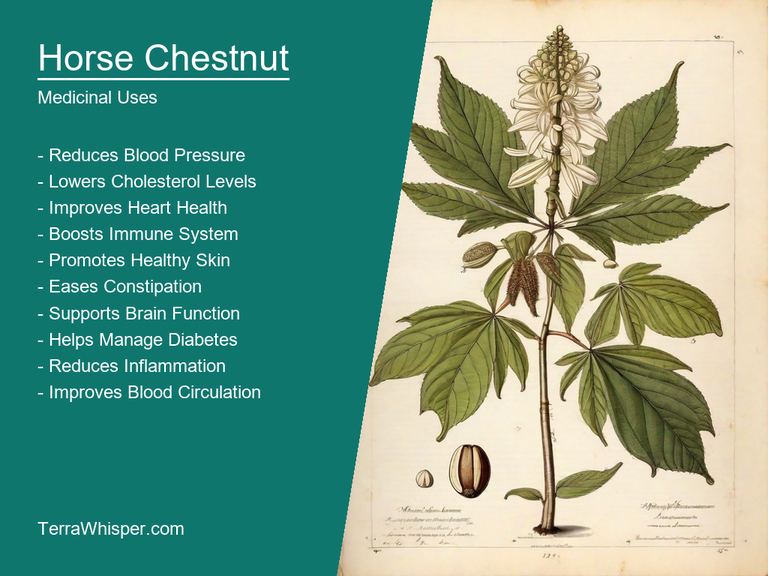
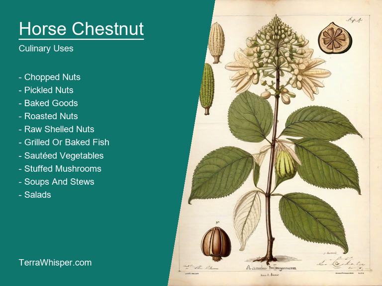
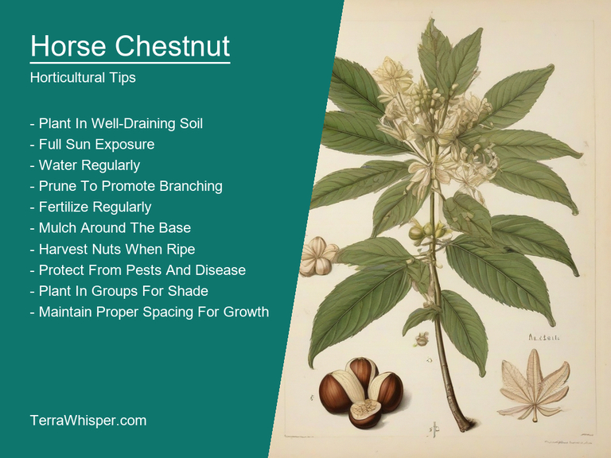
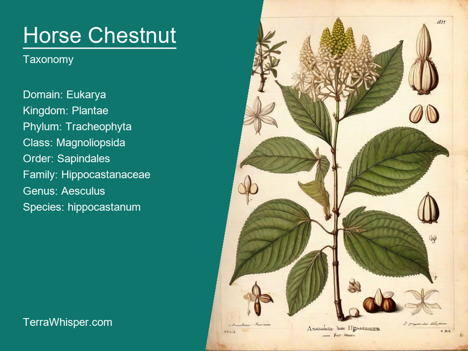
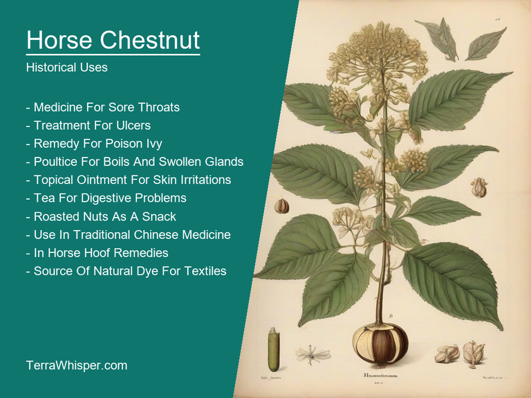

What To Know Before Using Horse Chestnut (Aesculus Hippocastanum)

Horse chestnut, scientifically known as Aesculus hippocastanum, is a tree that has been used for centuries for its medicinal and culinary properties. The seeds of the horse chestnut are high in vitamin C and have been used to treat various ailments such as coughs and colds. Additionally, the bark and leaves can be made into a tea which helps alleviate joint pain and swelling. The young shoots of the tree can also be cooked and eaten like asparagus.
Horse chestnut is a popular ornamental tree, known for its stunning features such as large, showy flowers that bloom in late spring or early summer. These flowers are often white with a purple tinge and can be up to 10 cm across. The leaves of the horse chestnut are also attractive, with glossy dark green palmate leaves which turn yellow in autumn before falling off. Additionally, the tree produces large spiky seed pods that are very distinctive.
Horse chestnut is a species native to Europe and western Asia. It has been cultivated for centuries due to its attractive appearance and hardiness. The tree can grow up to 30 meters tall and has a broad, rounded crown. In ancient times, the seeds of the horse chestnut were used by Native Americans as a remedy for skin inflammations. Moreover, during World War I, it was used as a substitute for quinine in treating malaria due to its antiparasitic properties. Its botanical name Aesculus comes from the Greek word 'aiskullein', meaning 'to ward off evil'.
In this article, you will discover what are the medicinal and culinary uses of horse chestnut. Then, you'll learn how to cultivate it, what is its botanical profile, and how it was used historically.
What Are The Medicinal Uses Of Horse Chestnut?
Horse chestnut (Aesculus hippocastanum) has many health benefits, ranging from cardiovascular to anti-inflammatory properties. It is an important herb in traditional medicine practices like Ayurveda and Chinese medicine. The medicinal part mainly consists of the seeds, known as horse chestnut seeds or conkers, which contain active constituents that offer therapeutic value.
The following illustration lists the most important uses of horse chestnut in medicine.

These constituents include saponins (specifically aescin), flavonoids, tannins, phytosterols and glycosides, each providing unique benefits to the body when combined. The most prominent health benefit of horse chestnut is its ability to promote proper blood circulation in veins as it helps strengthen capillary walls, which in turn reduces swelling and inflammation.
The seeds are used for various medicinal preparations such as tea, tinctures, and ointments. They can be taken orally, in supplement form, or applied topically to targeted areas with swelling, varicose veins, or other circulatory issues. While horse chestnut extract has been widely studied for its medicinal uses, it's essential to note that its efficacy and safety have not yet been fully established by scientific research.
There are potential side effects associated with the use of horse chestnut, including allergies, abnormal heart rhythms, and stomach upset. In some cases, consuming high doses may cause toxicity, leading to kidney damage or other serious health issues.
To minimize risks and maximize benefits, it's important to follow recommended guidelines. Consult a healthcare professional before using horse chestnut as part of your treatment plan, especially if you have any pre-existing medical conditions or are taking other medications. Pay attention to dosage instructions, and discontinue use if you experience any adverse reactions.
What Are The Culinary Uses Of Horse Chestnut?
Horse chestnut has a variety of culinary uses. It is often used to make horse chestnut flour, which is commonly used to make pastry fillings and cakes. Additionally, the nuts themselves are often used as a snack or ingredient in savory dishes such as stews and salads. The leaves can also be used as a seasoning for meat dishes.
The following illustration lists the most common uses of horse chestnut for culinary purposes.

Horse chestnut has a nutty flavor with a slightly sweet taste. It is comparable to that of other edible nuts, but with a more subtle flavor profile. The flour made from the nuts has a mild, earthy taste that pairs well with sweet ingredients such as sugar and honey.
When it comes to culinary uses, only certain parts of the horse chestnut are used. The nuts themselves are used whole or ground into flour. The leaves can be used fresh or dried and are often added to stews or soups for flavor. The bark of the tree is also sometimes used as a substitute for coffee grounds in some traditional recipes.
When using horse chestnut in cooking, it's important to use caution. While the nuts themselves are generally safe to consume, there are certain parts of the tree that can be toxic if ingested. For example, the seeds inside the nuts should not be eaten as they contain a compound called aescin, which has been shown to cause heart problems in large quantities. It's also important to avoid using any parts of the horse chestnut tree that have been treated with pesticides or other chemicals.
Overall, horse chestnut is generally safe to consume in small quantities as a culinary ingredient. However, it's important to be aware of the potential risks and to use caution when using any parts of the tree that may be toxic. It's always best to consult with a healthcare professional if you have any concerns about your diet or health.
How To Cultivate Horse Chestnut In Your Garden?
To grow a horse chestnut tree, you need to start with seeds or seedlings. Seeds can be obtained from mature nuts of wild horse chestnuts or purchased from nurseries. Planting seeds in early spring is best, as they require a period of cold stratification before planting. Once planted, the seeds should be buried at a depth of 1-2 inches and spaced about 6-12 inches apart. Water the soil thoroughly after planting and keep it moist until the seeds germinate. Seedlings should be transplanted in late spring or early summer when they are about 3-4 inches tall.
The following illustration lists the most important tips to cutlitvate horse chestnut.

Horse chestnut trees prefer full sun to partial shade and well-drained soil. They can tolerate slightly acidic to neutral soils with a pH between 6.0-7.5. These trees require a large amount of space, growing up to 30-40 feet tall and wide. They also have deep roots, so it's important to choose a location that provides ample room for their roots to spread.
Maintenance of horse chestnut trees involves regular pruning to remove dead or damaged branches and to shape the tree. Prune in late winter or early spring before new growth starts. This will encourage bushier growth and prevent the development of large, single-stemmed trees. Fertilization is also important, especially for young trees. Use a balanced fertilizer formulated for trees every year in early spring. Horse chestnut trees are susceptible to pests such as the equine chestnut blight and leaf mining beetles. Regularly inspect the tree for any signs of damage or infestation and take action immediately if necessary.
What Is The Botanical Profile Of Horse Chestnut?
The horse chestnut (Aesculus hippocastanum) is a perennial tree that belongs to the genus Aesculus in the family Sapindaceae. It is native to eastern Europe and western Asia, where it is found in deciduous forests and woodlands. The common names for this plant include horse chestnut, sweet chestnut, and marron (the edible fruit of the tree).
The following illustration display the botanical profile of horse chestnut.

The horse chestnut tree has a distinctive appearance, with its deciduous leaves being large and oval-shaped, and its flowers blooming in clusters on the ends of its branches. Its bark is grayish-brown and deeply furrowed, and it produces large, hard-shelled nuts that are used for food and medicine. The tree can grow up to 30 meters (100 feet) tall and has a lifespan of several hundred years.
There are several variants of the horse chestnut tree, including the common, Chinese, and Japanese varieties. These variants differ mainly in their physical appearance, with the common variety having larger leaves and more pronounced bumps on its trunk, while the Chinese and Japanese varieties have smaller leaves and a more rounded trunk shape. The Chinese and Japanese varieties also produce fruit earlier in the season than the common variety.
The horse chestnut tree is native to eastern Europe and western Asia, where it is found in deciduous forests and woodlands. It requires a well-drained, fertile soil and full sun exposure. The tree also tolerates partial shade and can be grown in containers. It has an important ecological role, providing food and habitat for various animals, including birds, insects, and mammals.
The life cycle of the horse chestnut tree begins with the production of flowers on its branches, which are pollinated by wind or insects. These flowers develop into fruit, which contains seeds that can germinate and grow new plants. The tree also produces aerial roots that help it anchor in place and absorb water. Its leaves provide shade and food for animals, while its nuts are used as a source of food and medicine for humans.
What Are The Historical Uses Of Horse Chestnut?
The etymology of "horse chestnut" originates from a combination between two words – 'equus', which means horse and refers to its resemblance with horse-related feed such as oats or corn, while the word ‘castaneum' comes directly from Latin for meaning nut, symbolizing that it is indeed a kind of tree. The name thus represents both physical attributes - one related more towards appearance (horse) whereas another indicating essence/substance(nut). Horse chestnuts have had their share in various cultural references; they were often used as part and parcel during early traditional games which revolved around the nuts themselves, sometimes with an added ritual element like fortune-telling or symbolism.
The following illustration lists the most well known historical uses of horse chestnut.

In terms of myths & legends, numerous stories are connected to this particular species - one widely told European fable involves a horse who got lost in dense woods and stumbled upon these chestnuts that provided him comfort while he was thirsty; henceforth the tree became associated with horses ever since. Additionally there're accounts from Greek mythology where Aesculapius, god of medicine used this plant for healing purposes as its seed is said to have medicinal properties when ground into powder form helping soothe aches & pains too!
Horse chestnut trees were prominently referenced in numerous literary works across centuries; notable authors who alluded or featured these magnificent entities encompass William Wordsworth, John Keats among many others. In his poem 'My Heart Leaps Up', the great Romantic poet even associated this tree with personal growth and inner change - a reflection of our soul that reaches for something greater beyond just physical existence; whereas other literature also referenced it as an emblemic object symbolizing fertility or abundance due to its copious flowering in spring season.
Lastly, horse chestnut had deep roots into different superstitious practices from centuries back too – many cultures believed these nuts held powers for ward off evil spirits while others used them strategically during weddings believing the flowers will only bring fortune upon marriage if placed appropriately thus confirming its magical charm throughout history.